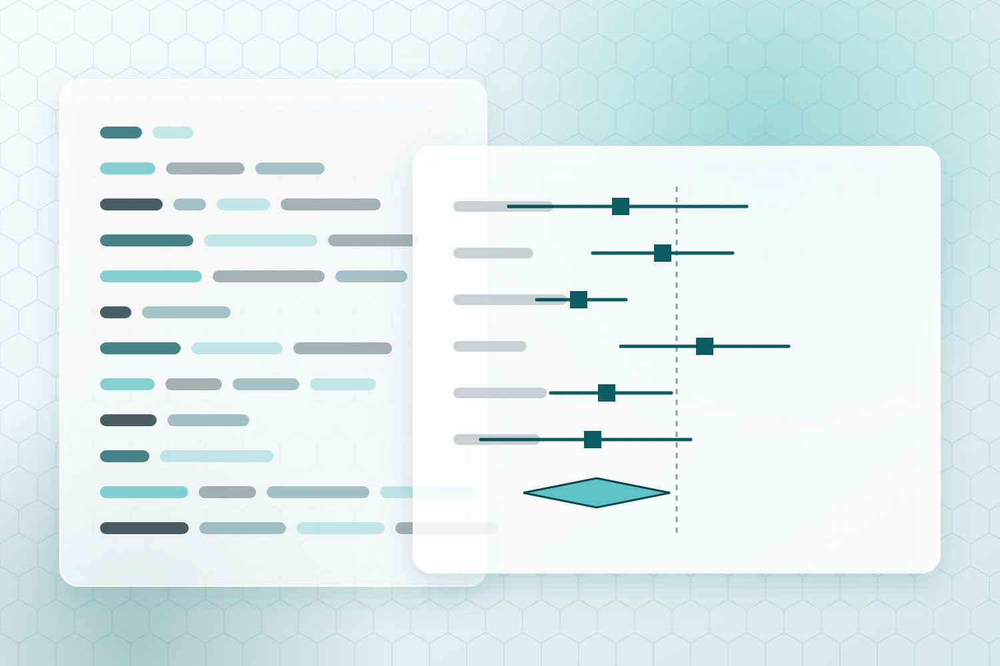

Biostatistics & programming
Statisticians shape a trial from the protocol onward, and programmers turn the data into the tables, listings and figures a submission depends on. A weak hire here shows up at database lock, when it's too late.
Roles we fill
- Principal and senior biostatistician
- Statistical programmer (SAS or R)
- Lead programmer
- Clinical data scientist
Where they work
- Phase I to IV trials
- Integrated summaries for submission
- Post-hoc and publication analyses
Skills we screen for
SASRCDISC SDTMADaMDefine-XMLICH E9(R1) estimandsSAP writingTLFsAdaptive designsBayesian methods